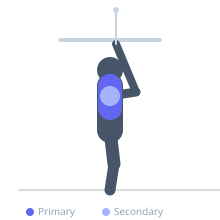

Exercise guide / Straight-Arm Pulldown
Straight-Arm Pulldown
The straight-arm pulldown is a cable isolation exercise that targets the latissimus dorsi without recruiting the biceps, as the elbows remain locked throughout the movement. This makes it an effective tool for developing the mind-muscle connection to the lats and for pre-exhausting or finishing the back without fatiguing the elbow flexors.
Primary muscles
latissimus dorsi
Secondary muscles
teres major
deltoid posterior
Stabilizers
transverse abdominis
Equipment
Cable Machine (High Pulley)


Starting position
- Stand facing a high-pulley cable machine with feet shoulder-width apart. Grasp a straight bar with both hands shoulder-width apart using a pronated grip. Take a step back and lean forward slightly from the hips, extending the arms overhead so the lats are on stretch.
Setup
- Attach a straight bar to the high pulley. Set the weight appropriately — this is an isolation exercise and heavier loads commonly break form. Position yourself far enough from the stack to feel lat tension at the start.
Steps
- Step 1: Begin with arms fully extended overhead, feeling a stretch in the lats and a slight forward lean at the hips.
- Step 2: Lock the elbows — they must not bend at any point during the movement.
- Step 3: Drive the bar down toward your thighs in a wide arc by contracting the lats and depressing the shoulder blades.
- Step 4: Lower the bar to touch the front of the thighs, maximally contracting the lats.
- Step 5: Reverse the motion under control, allowing the arms to rise back to the starting position with the lats fully lengthened.
Coaching cues
- Pretend your elbows are in a cast — they cannot bend
- Lead the movement with the shoulder blades, not the hands
- Think of crushing something between your lat and your hip
Breathing
- Exhale as you pull the bar down. Inhale as you return to the overhead starting position.
Range of motion
- Full extension overhead at the start to the thighs at the bottom. The arc of movement should be smooth and consistent.
Tempo
- 2-1-3-0 (2s pull down, 1s hold, 3s eccentric return)
Common mistakes
- Bending the elbows — this recruits the biceps and reduces lat isolation
- Using trunk flexion rather than lat contraction to drive the bar down
- Insufficient range of motion by not allowing the arms to fully extend overhead
Safety
- Avoid rounding the lower back — maintain a neutral spine throughout
- Do not load this exercise heavily; it is intended for isolation work
Training
- hypertrophy: 12–20 reps
- endurance: 15–25 reps
- hypertrophy: 3–4 sets
- endurance: 2–3 sets
- Rest: {'hypertrophy': 60, 'endurance': 30}